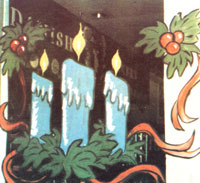

Think back to last year's Christmas season. Remember the colorful greetings painted on supermarket and restaurant windows? Well, no matter how crude and misshapen those holiday symbols might have appeared, someone was probably paid to paint them, and-this Christmas-some of that money could be yours. Fortunately for those of us without the Rembrandt touch, this profession doesn't require much talent or experience. All you'll need to set yourself up in business is a bit of inspiration (uncomplicated, traditional Christmas card designs can provide it) . .. plus a little practice (try your skill on your own windows at home) and some salesmanship.
Though you can begin lining up customers as early as September and October, there's still time this year to head for supermarkets, restaurants, service stations, car dealers, beauty salons, and so forth to make your pitch.
As with any interview, be sure to be polite, organized, and neatly dressed when you ask to speak to the establishment's manager. Explain how your colorful designs, characters, and greetings can add a fine holiday spirit to his or her premises. Though most people will prefer to leave the creative decisions up to you, listen carefully to any ideas your prospects may have, and carry a small note pad and pen to jot down important details.
Be prepared to quote a fair price. I've found that $10 to $15 is about right for decorating one 6' X 8' window (depending on how much time the job takes). Usually, it'll be best to suggest a price range. For example: "I can do those three windows and the sliding door for $35 to $45. The job will include putting 'Season's Greetings' on the middle window, a Santa and reindeer on the two outer windows, and candles and holly on the door. I'll fill in any gaps with holly and ribbons."
Before you close the deal, be sure that both you and your customer know exactly what you'll be painting .. . how much it will cost . . . and when you'll do the work. (The day after Thanksgiving isn't too early to begin ... and if you're still painting New Year's decorations on Christmas Eve, hurray for you!) Then, a few days before the date agreed upon, call and remind the customer that you're coming.
Don't be discouraged by folks who refuse your services. You may talk to some 25 or 35 business people and end up with only half a dozen skeptical okays. But word will travel quickly once you begin work, and you're very likely to have other offers . . . even from the same people who turned you down at first. During my initial season in this holiday trade for instance, I started with five stores and ended up doing 15!
Remember, too, that the first couple of jobs may take forever to complete, and you'll wonder why you ever got into what seems to be a $1.50-an-hour racket. But within a few days your confidence and speed will increase dramatically, and you'll be breezing along at a pace that will earn an easy $6 to $10 an hour.
To accomplish your mission, you'll need fast-drying, powdered tempera (water-based) paints, which will usually cost less than $2.50 for a one-pound jar or can. (Don't settle for the tiny, expensive containers of premixed liquid tempera ... and, of course, never use any oil-based paint, because-while it does withstand sleet, snow, and rain-your customers won't be pleased when they attempt to remove it.)
Purchase a variety of colors ... red, green, black, yellow, white, and blue . . . at least. For painting on glass, you'll have to dilute the powder more than the directions indicate, as too thick a consistency will crack and peel when it dries. Still, if the mix is too thin, the paint will run . . . so you'll want to experiment at home until you get it right. And you can make the mixing job easier if you first put the powder through a flour sifter to get out all the lumps. (Some people even use a blender to stir up large batches of tempera and water.)
Empty plastic margarine or whipped-topping bowls make good paint containers. The snap-on lids prevent colors from drying out overnight, and you won't have to empty and clean them every day. Tempera, however, does have a tendency to thicken as you use it, so carry a jug of water with you for thinning the mixture.
Begin your pane painting by drawing the design's outline with a grease or glass-marking pencil, since-if you need to make a correction-it's a lot easier and neater to rub off a thin line than a big streak of unwanted, half-dried paint. (Incidentally, provided the window is well shielded from rain or snow, I find it easier to paint on the outside than on the inside of the glass .. . but, again, practicing at home will enable you to work either way.)
For applying the colors, I recommend sponge brushes (which are available at paint and hardware stores), because they are inexpensive, can be purchased in a variety of sizes, and are easy to clean. To draw very fine lines, though, you might want to try using a small watercolor brush.
Finally, you'll need a stepladder. (A sturdy box might do if you're not reaching too high.)
And that's about all the start-up information that's necessary. By this time next year, you'll probably be able to give me a few pointers on this cash-producing, creative endeavor!
EDITOR'S NOTE: Christmas is probably the most lucrative season for window painters, but keep it in mind for other holidays like Easter and Halloween . . . and be sure to let your customers know that you can deck out their establishments for sales, too!
|
 |
|
|